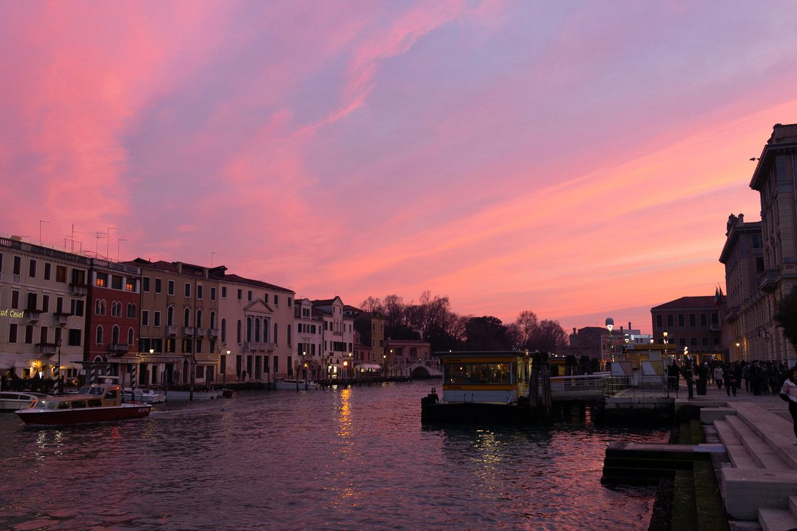
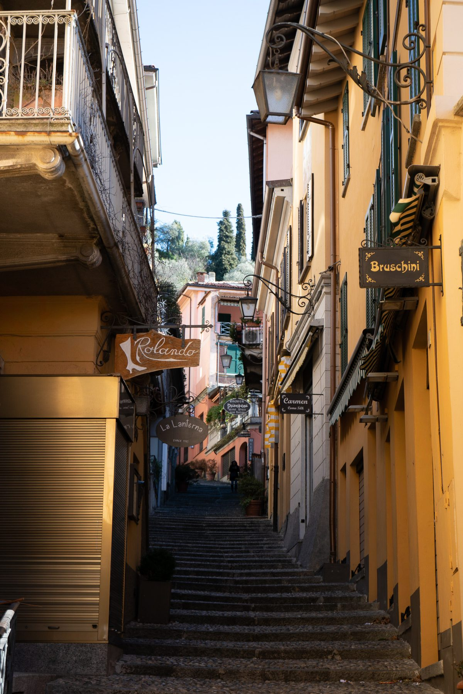

Vincent Lu
影像 × 設計 × AI 小工具
Hallstatt, Austria
You cannot depend on your eyes if your imagination is out of focus.
— Mark Twain
拍過微電影、在公部門做了十年的設計與傳播，相信好的設計能讓公共資訊更好懂。現在我用 AI 做一些小工具，先解決自己家裡的問題，再開源分享給有同樣需求的人。
作品
智帳
電子發票匯入、AI 依品項分類、截圖對帳的個人記帳 App。展示版準備中。
Hallstatt in haze
2022 IPA 國際攝影獎 Official Selection。雪白、湖藍與磚紅，一個起霧的早晨。

攝影




經歷
- 2019 — 現在｜地方政府｜設計職
- 2015 — 2019｜臺北市政府｜技術職，參與施政報告美感提升與市政直播
- 2012 — 2014｜影像製作｜導演
- 2009 — 2011｜影像製作｜編劇
得獎
- 2022 IPA 國際攝影獎 Official Selection
- 2018 臺北市政府青年優秀公務員
- 2013 美濃田園音樂節微電影 銅牌（編劇）
- 2013 天下雜誌「發現美麗臺灣」入圍（編劇、導演）
- 2012 「看見花蓮」全國攝影比賽 優選
- 2011 農委會農村樂活影片 首獎（編劇）
國立嘉義大學 美術學系（藝術管理學程）